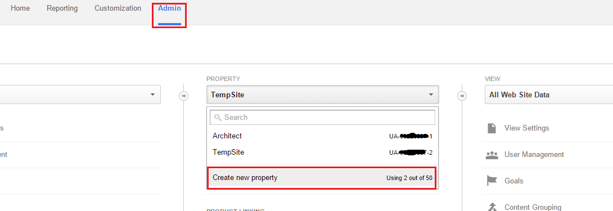
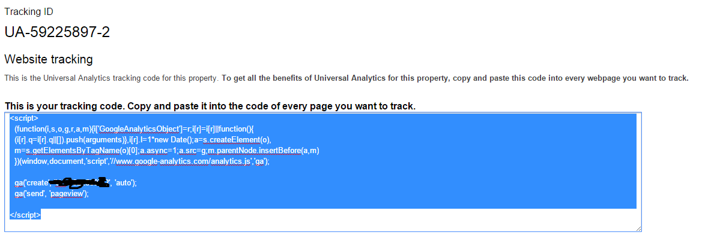

Creating a new database
First thing you want to do before installing Architect is to create a new database on your mysql server. If you already know how to do this/or have already created one just skip to the next step.
Your host will most likely be running phpMyAdmin as mysql manager, if that's the case here's a step by step guide (if not the proccess will be very similar on other managers).
Login to your control panel, find and click phpMyAdmin link: Click on the database tab in the top menu, enter any name you like and click create.
Uploading Files
After creating a database, unzpip the .zip file you donwloaded from CodeCanyon and upload the contents of architect/server folder to your server's root folder (usually called www or html or something similar) or a sub-directory.
Shared hosting providers usually have a web based file manager, but you should use something like Filezilla to do the upload as the web based managers can cause various problems fairly often.
Make sure that storage and all the sub-folders are writable by your server (have 777 permissions if you are on shared hosting). You can change files and folders permissions by right-clicking them in the filemanager, clicking file permissions, and then entering 777 in the permissions field.
Optional. Point your domain or sub-domain to "public" folder inside architect directory instead of architect directory itself. While this is optional, you should do it if possible to increase security and potentially avoid issues on some servers.

Installing Architect
After you uploaded Architect files, simply open up your site url and follow on-screen instructions to finish the installation.

Updating from version 1.8.2 or earlier:
With version 2.0 architect has been fully re-written, essentially it's now a different application to prior versions. This means that updating from versions prior to 2.0 is a bit more difficult.
If you don't need to keep data from older versions (users, projects, custom templates etc), easiest way would be to remove old version completely and install fresh copy of 2.0
If you do want to migrate data from older versions, please follow the steps below: (If you don't want to loose production time, we'd recommend making a duplicate of your current site and updating that, instead of updating a live site directly.)
- Make sure you have at least PHP 5.6 on your server.
- Backup current architect database via phpMyAdmin or similar tool.
- Backup current architect files.
- Delete all files and folders inside old architect directory on your server.
- Extract the .zip file you downloaded from CodeCanyon.
- Upload the contents of "architect/server" folder to the old Architect folder on your server.
- Copy assets/images/uploads folder from old architect directory you have backed up, into public folder.
- Rename .env.example file inside architect directory on your server to .env
- Enter your database details and site url inside .env file.
- if your database credentials contain stapces, surround them with double quotes. For example DATABASE_NAME="name with spaces"
- Visit http://yoursite.com/secure/update url and click Update Now button. (make sure you are logged in as admin)
Updating from version 2.0.0 or newer:
- Extract the .zip file you downloaded from CodeCanyon.
- Upload the contents of "architect/server" folder to the main Architect folder on your server.
- Visit http://yoursite.com/secure/update url and click Update Now button. (make sure you are logged in as admin)
client folder inside the .zip can be ignored, unless you plan to modify Architect code.
Elements
#Introduction
You can see all the elements that come with Architect by default on the left sidebar (elements panel), they can be basic ones like button or link or they can be a lot more complex and combine html markup, css styling and javascript behaviour into one element.
#Drag and Drop
You can drag and drop elements from the elements panel into the builder. Note that you might not be able to drop them anywhere you like, because architect follows official HTML5 specification for what elements accept what elements as children, for example an unordered list element (ul) will only accept list item (li) as a child, so you will only be able to drag and drop list items inside unordered list.
#Creating new elements
You can create your own elements, to accompany the default ones.
First create a new file inside public/storage/elements folder, you should name it after your element, for example, if you want to name your element My awesome element, the file name should be:
myAwesomeElement.html
Inside the file, describe your new element. You can do this in 3 parts:
- Add any css you need for your element inside
<style></style>tags at the top of the file. You should add<style></style>tags even if your element doesn't require any custom css. - Add your element html markup after the style tag.
- And finally add your element configuration after html markup, inside
<script></script>tags.
| Name | Type | Default | Description |
|---|---|---|---|
| Name | String | Generic | Name of your element. Uppercase and spaces allowed. |
| Nodes | Array|String | undefined | Either an array of nodes your element is matched by or '*', meaning all nodes (your element will be matched by class). |
| Frameworks | Array | undefined | This doesn't do much at the moment, but will be used in the future when architect supported mupltiple frameworks. |
| Class | String | undefined | A class your element will be matched by, can be empty if you specified a node instead. |
| Types | Array | ['flow'] | An array of element types (html categories), you can find them here. |
| validChildren | Array|false | ['flow'] | An array of types (html categories) that your element accepts as children. you can the categories here. |
| Category | String | undefined | What category in elements panel your element should appear under (typography, forms, components etc). |
| previewScale | String | 1 | You can specify the ratio you want to shrink your element on in the preview in elements panel if it doesn't fit otherwise. |
| showWysiwyg | Boolean | true | Whether or not a text editor should be show when your element is double clicked. |
| hiddenClasses | Array | undefined | Array of classes you want to be hidden in the inspector class editor. |
| canDrag | Boolean | true | Whether or not the element should be draggable in the builder. |
| canModify | Array | all | An array of styles that should be modifiable from the inspector (padding, margin, borders etc) |
| Attributes | Object | Undefined | This is where you can specific javascript config behaviour for your element in the inspector. The object should contain keyd objects where name is selects or input fields name and value is a config object. You can look at some examples in client\src\app\html-builder\elements\definitions\bootstrap.js or base.js Here is an example for text input element that allows to change placeholder attribute value: placeholder: {
list: [
{name: 'Text', value: 'text'},
{name: 'Password', value: 'password'},
],
text: true,
value: 'Text input',
onAssign: function($scope) {
this.value = $scope.selected.node.getAttribute('placeholder');
},
onChange: function($scope, text) {
$scope.selected.node.setAttribute('placeholder', text);
$scope.repositionBox('select');
}
},
list: An array of objects that represent select options, where value is option value and name is option name. text: specifies whether it should be an input field or a select. If this is false your should specify a list instead. value: default value for select or input field. onAssign: Callback for then this config field is innitiated (when your element is selected in the builder), good place to set a default value as seen above. onChange: Callback for then this config value is changed, you get passed $scope on which you can access the selected node in the builder and the new value as a second parameter. |
#Keybinds
If keybinds are not working you might need to click anywhere inside the builder to focus the main window.
| Keybind | Description |
|---|---|
| ↑ | Move selected element up in builder |
| ↓ | Move selected element down in builder |
| Del | Delete selected element from builder |
| Ctrl + C | Copy selected element |
| Ctrl + V | Paste selected element |
| Ctrl + X | Cut selected element |
- Register for regular facebook account, if you don't already have one.
- Open this url, click my apps in the top navigation bar, then Add a New App
- Enter any display name, your email address and click Create App ID
- Click Add Product in the left sidebar, then Facebook Login, select Web, enter your site url. You can ignore the rest of the panels in quickstart wizard.
- Click Facebook Login > Settings and enter http://your-site-url.com/secure/auth/social/facebook/callback into Valid OAuth redirect URIs field.
- Click Dashboard in left sidebar and copy/paste APP ID and APP SECRET into settings page.

- Register for regular twitter account, if you don't already have one.
- Open this url, click Create New App, enter anything into name and description fields, enter your site url into Website and Callback URL fields and create the app.
- Copy Consumer Key and Consumer Secret from "Keys and Access Tokens" tab into settings page.

- Register for regular google account, if you don't already have one.
- Open this url, create a new project, click Credentials in left sidebar, select Oauth Client ID -> Web Application.
- Enter http://your-site-url.com/secure/auth/social/google/callback into Authorized Redirect URIs field and click Create.
- Copy/paste Client ID and Client Secret into settings page.

Outgoing Mail
Outgoing mail includes all emails that are sent from your application to the user. Password reset, user confirmation, notifications and more.
In order for outgoing mail to work, you will need to configure it in admin area > settings > mail page.
Unless you already have one of the other available mail methods set up, we highly recommend using mailgun. It's free for up to 10000 emails a month and you will avoid many of the problems associated with traditional SMTP servers.
Mailgun
Although you are not required to add a credit card for mailgun, it's recommended that you do, because you will be put on a lower priority queue without a credit card, which could result in slower email delivery.
- Register here
- In the next page click Add Your Domain button, then enter your site url in the Domain Name field and click Add Domain
- Verify your domain on mailgun. This will differ depending on your hosting, but you should be able to find a guide in your hosting providers documentation, mailgun documentation or simply via google search.


SMTP
If you want to use SMTP, go to admin area > settings > mail page and simply enter your smtp server credentials.
Analytics
Registering for google analytics account
Analytics page is powered by google analytics so you will need to register for google analytics and add their supplied code to your site. Here's how to do it.
Important! This will only enable tracking. See below on how to get the analytics page on the site working.
- 1. Go to this url. You will be prompted to login to your google account or create a new one if you don't have it already. Do it.
- 2. Click on Admin -> Property -> Create new Property -> fill out required fields -> click on get tracking ID  
- 3. Go to admin -> settings -> analytics and paste the code into google analytics tracking code field (only paste in the code that starts with UA, not the whole script).
Registering for google ID
To get analytics page on the site working, you will need to enter your google ID in the admin > settings > analytics page. You can use the same ID as for google social login, you can find instructions on how to obtain it, in the social login documentation section.
Two additional things you need to do for this ID from google developers console:
- Enable google analytics API.
- Enter your site url into authorized javascript origins field.
Viewing analytics information
Once you have created analytics account and entered it in settings page, go to admin area -> analytics, click on Access google analytics button, then click accept
And you are done. You can now easily view analytics information right from the admin area. You can also select different analytics account, property and view from the bottom of the page.
Translations
You can translate Architect right from the admin area so there's no need to mess with configuration files or 3rd party applications. Simply open translations page and enter your translation for a particular line under translation column in the table.
Note that while you can translate the original (englsish) locale, it is recommended to create a new one (frome the panel on the left) so you don't need to worry about overwriting it with future updates.
Support
If you have any issues or questions, you can submit a new ticket on our support site here. Thank you!
Social Login
In order for social logins to work properly, you will need to register for an application on their respective sites and enter the credentials you receive into admin area > settings > authentication page.